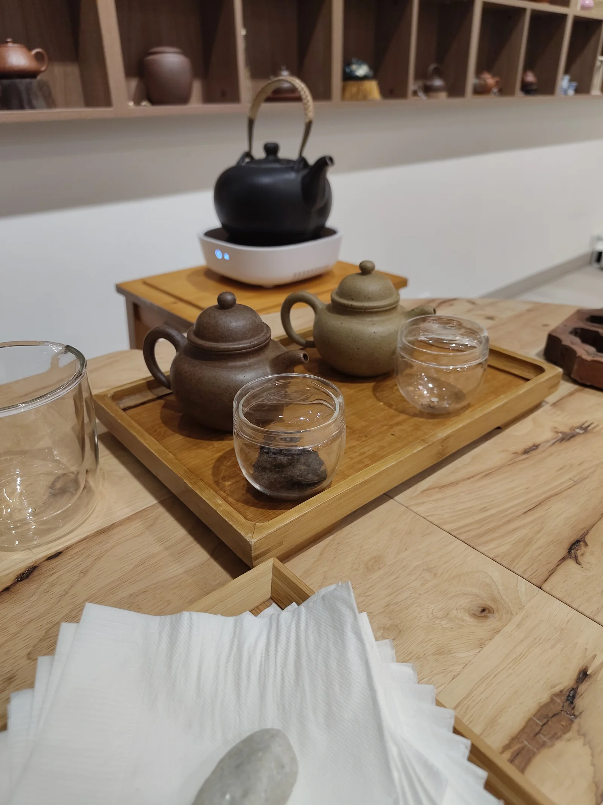
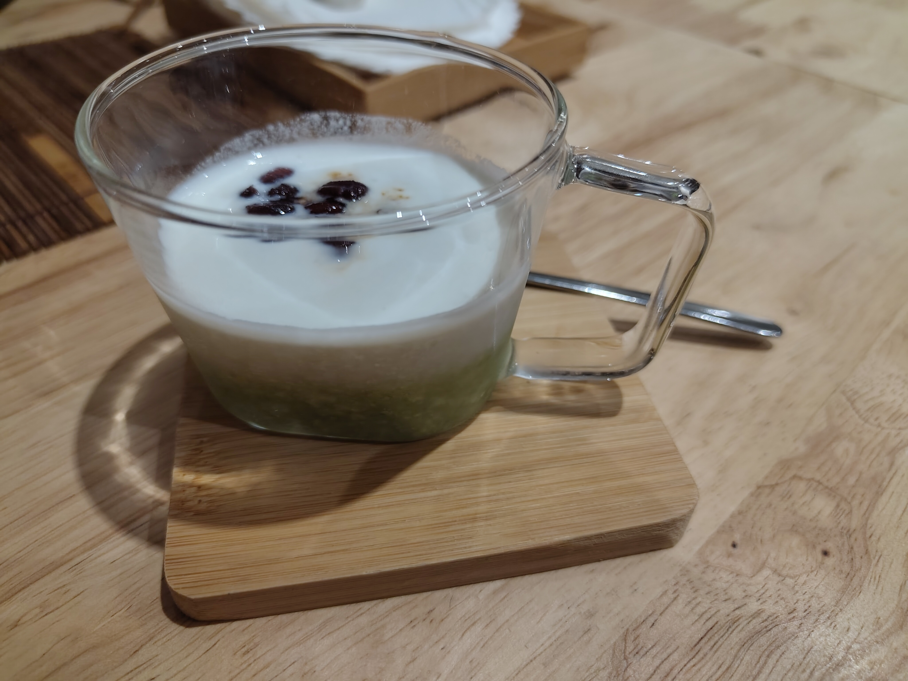

20 September 2026

I was invited to go to a tea house with a friend and had some lovely high-quality Pu’er tea while chatting along. Apparently the Pu’er tea industry went through a large transformation in 2007, shifting production from a high-quality artisanal industry towards large-scale plantations that drove the quality down. Teas from before 2007 are therefore often higher quality, something I found quite fascinating. I also had this quite unique (to Asia) rice pudding alongside the tea, which reminded me the Nordic Risifrutti:
